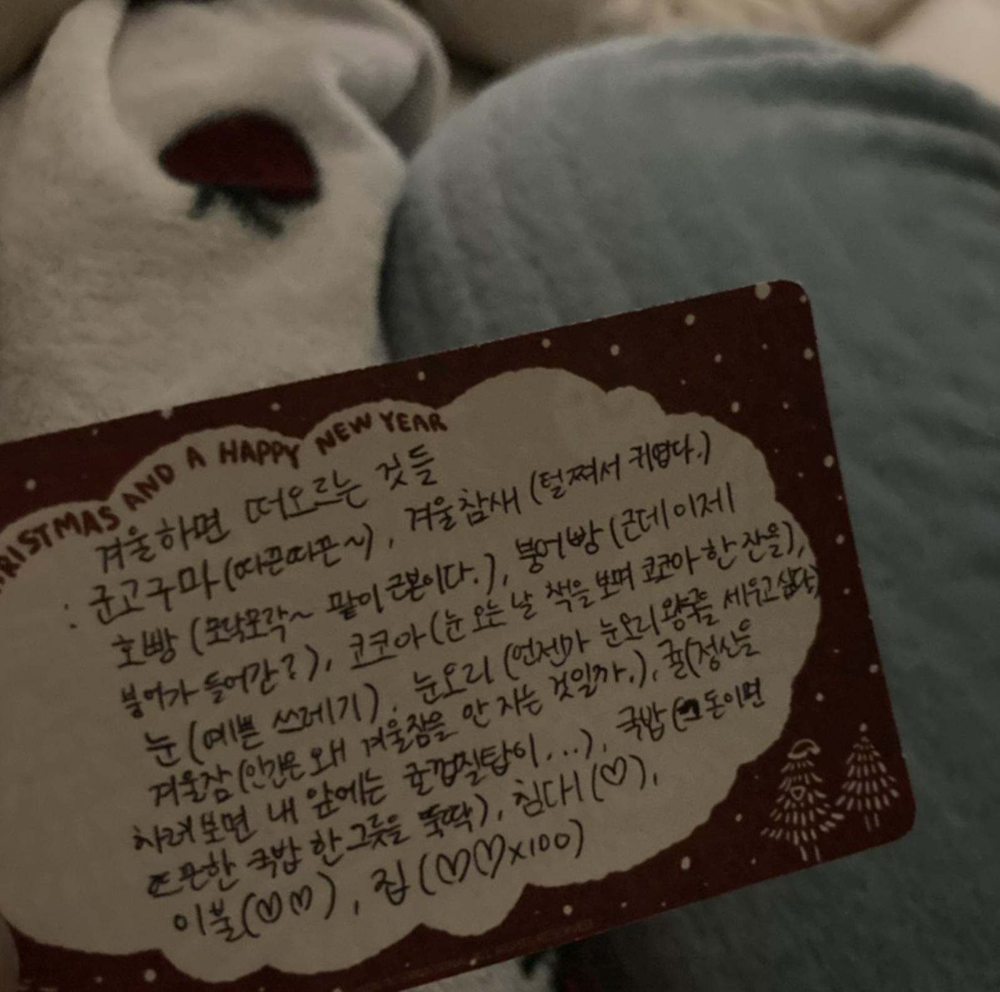
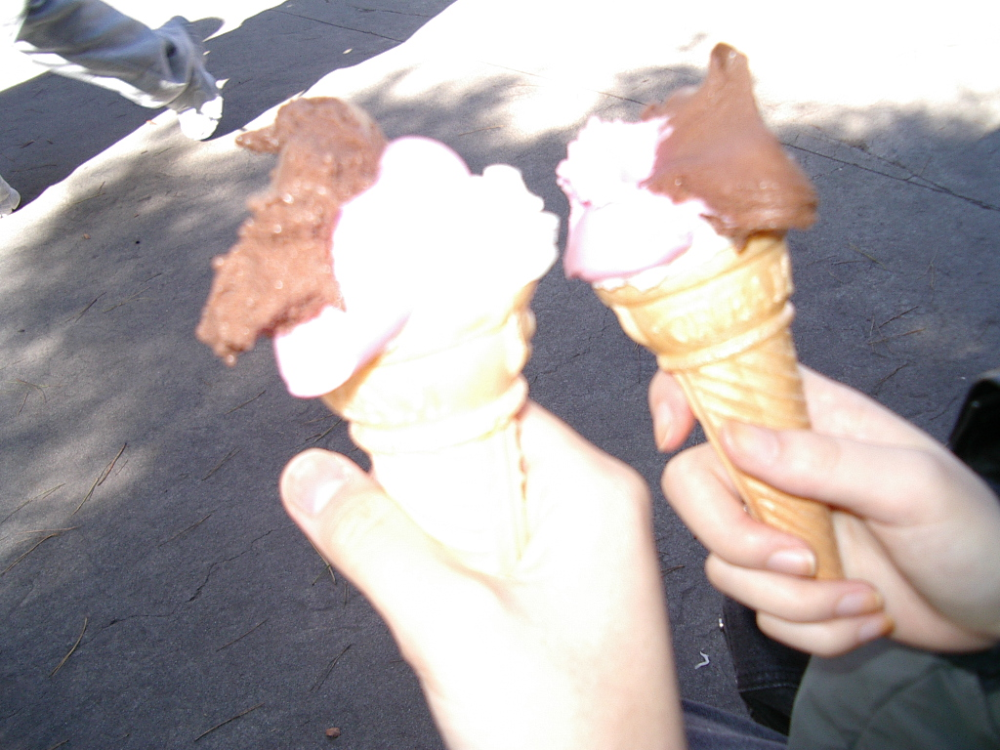
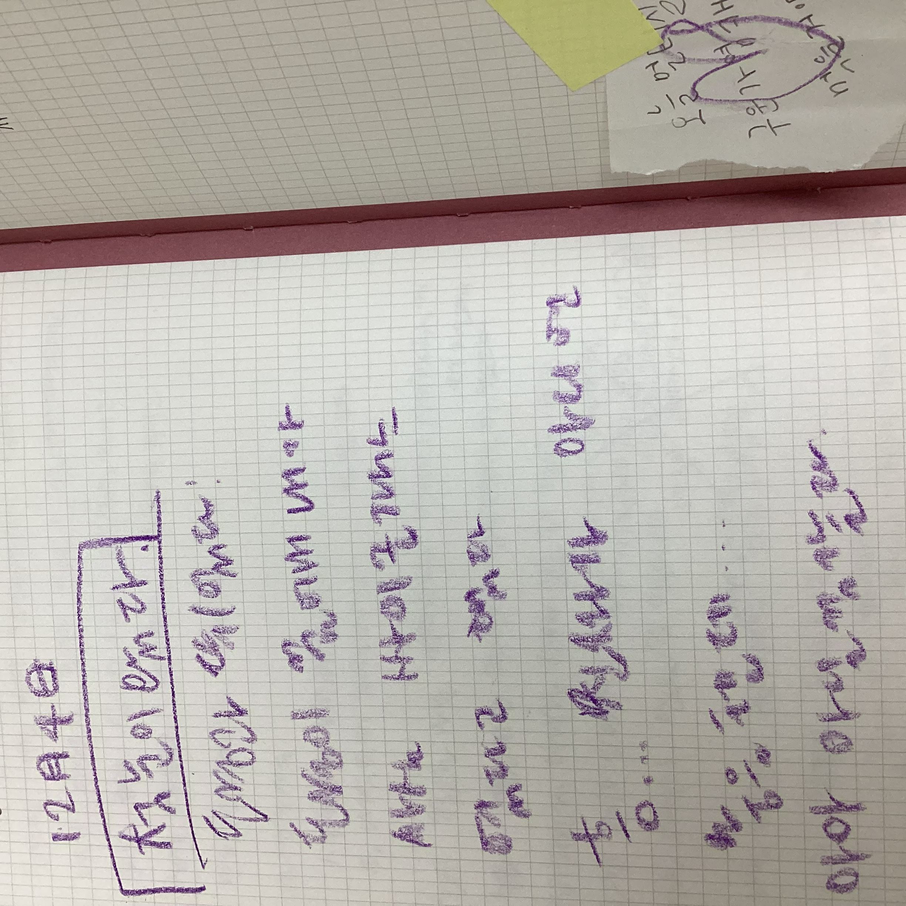

그거 알아? 낭만의 낭이랑 낭비의 낭은 같은 한자를 쓴대!
그런 지구에서 따뜻한 것들을 보면서 웃는 너가 좋♥아♥
예전에 너가 학교 앞 상가에 도연이랑 나갔다와서 왁자지껄하고 사람사는냄새나서 좋았다고... 말해준 게 너무 따뜻..했구
경주에서 비옷없이 탄 썸머린스플래쉬!..놀이 기구가 진짜 재밌었고!

첫눈올때도 너 만나서 좋았어.
눈을 그렇게 신나게 맞았던 건 정말 오랜만이었는데! 치마입었었는데도 하나도 안 추웠고

물만난물고기를 읽고! 너가 편지로 새로운 세상을 보게 해 주어서 고맙다고 한 적 있어.
그때는 말 못했는데.. 나도 너 덕분에 더 커다란 세상을 알게됐고!
그거 덕분에 이것저것 보고!해보고!할 수 있어서 올 한해가 너무 즐거웠어~
너한테도! 이십오가 기분 좋은 일 년으로 기억됐으면 좋겠고...
지금은 hi 이십오지만... 언젠가 bye...하고 새로 맞는 이십육도 나는 많이 좋아해줄거야!
왜냐면 이십오랑 똑같이 이십육도 한 번 뿐이니까
그때도 잘 부탁해!